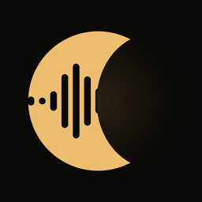

자는 동안의 소리를 기록해
코골이가 언제 심했는지 보여드립니다
We record the sounds while you sleep
and show you when snoring got loud
眠っている間の音を記録して
いびきがいつ大きかったかをお見せします
총량 하나로는 알 수 없습니다. 새벽 2시에 집중적으로 심했다면 그게 보여야 합니다. A single total tells you nothing. If 2 a.m. was the worst stretch, you should be able to see it. 合計だけでは分かりません。午前2時に集中していたなら、それが見えるべきです。
밤새 통녹음 대신 감지된 순간만 짧게 남깁니다. 하룻밤에 15MB 남짓입니다. Instead of recording all night, we keep short clips of the moments that mattered — about 15 MB a night. 一晩中の録音ではなく、検出された瞬間だけを短く残します。一晩で約15MBです。
녹음도 분석도 전부 기기 안에서. 서버로 보내지 않고 계정도 필요 없습니다. Recording and analysis both happen on device. Nothing is uploaded, no account needed. 録音も解析もすべて端末の中で。サーバーに送らず、アカウントも不要です。
어떤 신호도 혼자서 판정하지 않습니다.No single signal decides on its own.どの信号も単独では判定しません。
방의 배경 소음을 5분간 익힌 뒤 그 기준 위로 올라온 소리만 후보로 봅니다. 후보는 음향 분류, 저역 스펙트럼, 그리고 호흡 주기성으로 다시 걸러집니다. 코골이는 숨에 맞춰 반복되고, 문 닫는 소리나 지나가는 차는 단발입니다. 말소리가 감지된 구간은 판정을 보류합니다 — 말하고 있으면 깨어 있다는 뜻이니까요. The app spends five minutes learning your room's background noise, then only considers sounds that rise above it. Candidates are filtered again by sound classification, low-frequency spectrum, and breathing periodicity — snoring repeats with your breath, while a closing door or passing car is a one-off. Stretches with speech are held back: if you're talking, you're awake. まず5分かけて部屋の環境音を学習し、その基準を超えた音だけを候補とします。候補は音の分類、低域スペクトル、そして呼吸の周期性で再度絞られます — いびきは呼吸に合わせて繰り返し、ドアの音や通過する車は単発です。話し声が検出された区間は判定を保留します。話しているなら起きているからです。
측정 화면에는 실시간 그래프도, 지금까지의 횟수도, 어떤 애니메이션도 없습니다. 어두운 방에서 0.5초마다 움직이는 물체는 각성 자극이기 때문입니다. 5초 뒤 화면은 스스로 어두워지고, 자다 깨서 보실 수 있게 시각만 크게 남습니다. The measuring screen has no live graph, no running count, no animation. In a dark room, anything that moves every half second is a stimulus that keeps you awake. After five seconds the screen dims itself, leaving just the time — large enough to read if you wake up. 測定画面にはリアルタイムのグラフも、これまでの回数も、アニメーションもありません。暗い部屋で0.5秒ごとに動くものは覚醒の刺激になるからです。5秒後に画面は自ら暗くなり、夜中に目が覚めたときのために時刻だけが大きく残ります。
| 무료Free無料 | Pro | |
|---|---|---|
| 측정 · 리포트 · 그래프Measuring, reports, charts測定・レポート・グラフ | 전부All of itすべて | 전부All of itすべて |
| 측정 횟수Nights測定回数 | 주 3회3 a week週3回 | 무제한Unlimited無制限 |
| 클립 저장Clipsクリップ保存 | 30개3030件 | 300개 · 통녹음300 · all night300件・一晩中 |
| 추이Trends推移 | 7일7 days7日 | 90일90 days90日 |
| CSV 내보내기 · 광고CSV export · adsCSV書き出し・広告 | 잠금 · 표시Locked · shownロック・表示 | 사용 · 제거Unlocked · removed利用可・なし |